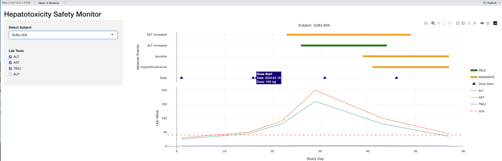

R + Shiny + Plotly: Interactive Visualization for Clinical Safety Data Review

A few years ago, because we needed to monitor drug safety and track liver and kidney function indicators, the medical lead asked me to regularly present AE, EX, and LB domains together in a single chart. At each scheduled time point, I had to update it manually. For a typical Phase I study with 20 to 30 subjects all plotted in the same figure, it was actually quite hard to quickly find the data for a specific subject.
Looking back now, a simple Shiny tool could have made the whole process much easier.
What Can Shiny Do?
Allowing reviewers to select a specific subject and explore AE, EX, and LB data in one place is a basic function that Shiny can definitely deliver. Add Plotly’s interactivity and Shiny’s Reactive mechanism, and reviewers can filter, zoom, and inspect details in real time — greatly improving the efficiency and experience of data review.
Shiny is built on three core components:
- UI: Defines what the interface looks like — input elements such as a subject selector and lab test checkboxes, and output areas for charts
- Server: Defines how the app responds when users interact — data filtering, calculation, and chart rendering logic all live here
- Reactive: The soul of Shiny. When an input changes, only the parts that depend on it are re-executed. The whole page does not reload, keeping the app fast and smooth
Visualization Design Thinking
Designing the right visualization for the right purpose is, in my view, the most important part of any Shiny tool — because every tool starts from a real need.
This demo uses a layout with AE and LB charts stacked vertically, sharing a common Study Day X-axis:
- Upper panel (AE chart): Color-coded by Severity (green / orange / red), horizontal bars show the duration of each adverse event, with dose start markers at the bottom
- Lower panel (LB chart): Trend lines for liver-related lab tests such as ALT, AST, and TBILI, with a red dashed ULN (Upper Limit of Normal) reference line
- Shared X-axis (Study Day): Reviewers can directly compare when AEs appeared relative to dosing and when lab values started to rise — all in a single view covering drug exposure, adverse events, and liver function changes over time
Key Implementation Details
Beyond the basic Shiny structure, this tool has several design decisions worth highlighting.
1. Modular Architecture with source()
The code is split into three separate files:
hepatotoxicity_monitor/
├── app.R # Main app (UI + Server)
├── data_dummy.R # Simulated data (EX / AE / LB)
└── utils.R # Utility functions (Study Day calculation)data_dummy.R: Simulated data that can be replaced with real EDC data without touching the main apputils.R: Utility functions including Study Day conversion logicapp.R: Main program handling only UI and Server logic
This design fully separates the data layer from the application layer — an important consideration in regulated environments where maintainability and traceability matter.
2. Unified Study Day Reference
Day 1 is defined as each subject’s first dose date. All dates are converted to relative day numbers. This allows subjects with different enrollment dates to be compared within the same time frame — standard practice in clinical trial data analysis.
# Calculate baseline (first dose date per subject)
baseline <- ex %>%
group_by(USUBJID) %>%
summarise(BASELINE = min(EXSTDTC), .groups = "drop")
# Convert to Study Day
to_study_day <- function(date, baseline_date) {
as.numeric(date - baseline_date) + 1
}4. Categorical Y-Axis Order Control
Using categoryorder = "array" forces the AE chart’s Y-axis order, placing the dose marker row at the bottom and stacking AE entries above it — keeping the layout clean and avoiding visual overlap.
yaxis = list(
title = "Adverse Events",
categoryorder = "array",
categoryarray = c("Dose", rev(unique(ae_df$AEDECOD)))
)5. Combining Plotly Interactivity with Shiny Reactive
A static chart can only be viewed. Clinical data review requires exploration. This tool combines two levels of interactivity:
Plotly Hover: When the mouse cursor rests on a chart element, a tooltip automatically appears showing detailed data. Every AE bar, LB data point, and dose marker supports this — hover to see the actual date, dose, severity, and relatedness without switching to another report. Traditional static charts only show approximate position; hover lets reviewers confirm precise values directly on the chart, reducing the time spent switching between figures and listings.
Shiny Reactive updates: When a reviewer switches subjects or selects different lab tests, all three domains update simultaneously, the X-axis range recalculates automatically, and the charts redraw instantly — all without reloading the page.
The result: reviewers can answer questions that previously required flipping through multiple reports — all in one view, with one action. For example: “On which study day did this subject’s ALT start rising? What was the severity of the corresponding AE?”
Example: SUBJ-004 Hepatotoxicity Pattern
The chart below shows SUBJ-004, a subject with a classic drug-induced liver injury (DILI) progression pattern:
- Day 23: AST and ALT start rising — early signs of hepatocellular damage
- Day 30: Dose reduced from 100mg to 50mg, but values continue to climb
- Day 39: Jaundice appears, indicating impaired liver function
- Day 43: Dose reduced again to 25mg, and lab values gradually recover
In a single view, the reviewer can immediately read the full clinical story: dosing → rising liver enzymes → AE onset → dose adjustment.
This type of tool is not new in clinical trials, and there are many ways to build on this concept. Replace the dummy data with real CRF data, add more domains such as VS and CM, and reviewers could complete a full individual case review in a single — or multi-panel — interface.
Clinical data visualization and Shiny tool development have always been among my interests. Happy to exchange ideas if you are working on something similar!